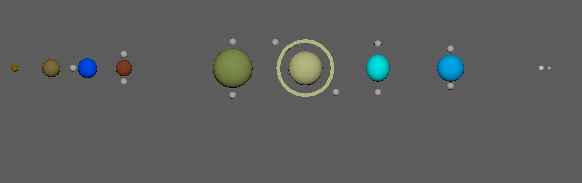
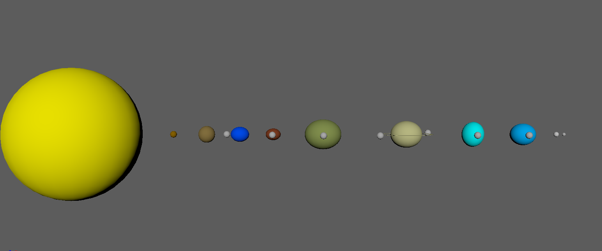
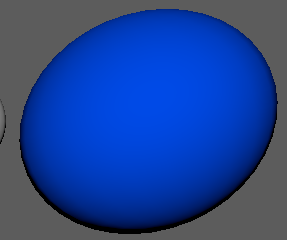
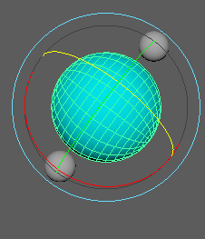

I was inspired to model my solar system after the real solar system in many of my additions, such as giving the appropriate planets bulges or making the orbits at different speeds.
Other effects are, however, wrong or exaggerated. This includes the squishing, backwards orbits, and yellow color of the Sun (which is actually fairly white).
Changed the spacing of the planets so that the gas giants are farther from the terrestrial planets, and Pluto is even farther.
Created equatorial bulges for Earth through Neptune by increasing the x and z-axis scales while reducing the y-axis scales.
Animated the sun and planets so that they "squish" up and down by keyframing the y-axis scale..
Tilted Pluto's orbit in relation to the ecliptic.
Made every other planet orbit backwards.
Tilted Uranus by 97 degrees and Earth by 23.5 degrees (roughly their real-life tilts).
 Shrunk Saturn's "ring".
Made Venus rotate backwards (as it does in real life).
Adjusted the rotation amounts of the orbits so that each planets orbits at different speeds. Just like real life, the farther planets take longer to orbit.
Made the sun yellow.